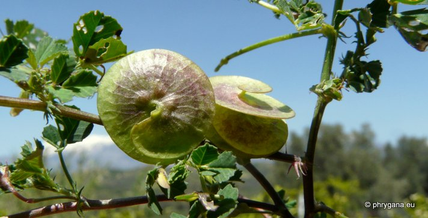
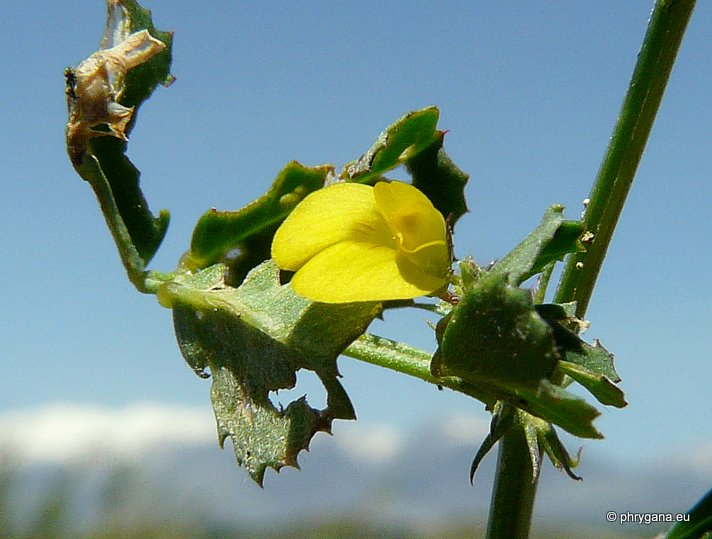
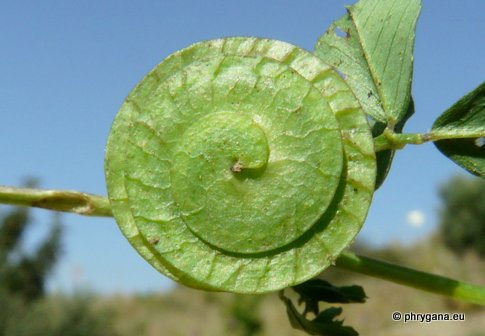
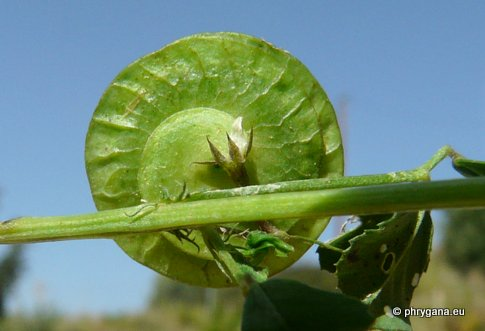

| PHRYGANA | Fauna | Flora | Galles | liste des espèces |
contact -
info - commentaires phrygana1 (at) gmail.com |
| Particularités crétoises | nouveautés | Mines | ressources naturelles |
| Medicago orbicularis (L.) BARTAL. |
| 335 | Flora | FABACEAE | Trifolieae | Medicago L. |
|
 Medicago orbicularis Kamilari 12 avril 2012 |
| la Luzerne orbiculaire -- Large Disk Medick -- Scheibenklee | |
| Plantes glabres ou parfois pubescentes, couchées-ascendates, à tiges anguleuses | |
| Feuilles: composées trifoliées, les folioles 5 - 20 mm, obovales, dentées dans la partie supérieure; stipules lancéolées; stipules laciniées | |
| Tige: poilue. | |
| Fleurs: petites, jaune vif, longues de 2 - 5 mm, groupées (1 - 3), pédonculées (pédoncule plus court que les feuilles); dents du calice poilues à la base | |
| Fruit: une gousse discoïde glabre, à 4 - 6 tours en spirale (sens contraire des aiguilles d'une montre); faces plates, avec un réseau de veines (réticulées); 10 - 18 mm de diamètre; une perforation (trou) centrale; graines verruqueuses à ridées, de couleur brun clair orangé | |
| Hauteur: 10 - 30 cm | Type biologique: thérophyte ramifié |
| Floraison: mars avril mai | |
| Altitudes: 0 - 400 m | |
| Statut en Crète: indigène | |
| Biotopes en Crète: olivaies, vignobles, jardins, terrains vagues, phrygana | |
| Distribution: région Méditerranéenne, Europe centrale, Asie occidentale, Proche-Orient | |
| Espèce héliophile | |
|

Medicago orbicularis Kamilari 12 avril 2012 |
|

 Medicago orbicularis Kamilari 12 avril 2012 |
| 14 avril 2012 |
| © paul fontaine -- © Phrygana.eu 2007 -- 2013 |